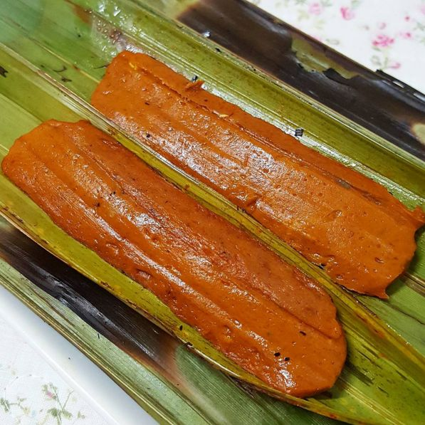

Otak-otak Muar is a well known traditional dish from Johor. It is made from finely blended mackerel mixed with coconut milk and spices, then wrapped in banana leaves before being steamed or grilled. Its taste is delicious, slightly spicy and sweet, with a fragrant aroma from the banana leaves. This dish is a favourite among many, especially at night markets and traditional gatherings.
Otak-otak Recipe
Bahan-bahan:
500g isi ikan tenggiri (dihaluskan)
150g tepung tapioka
50g tepung sagu
2 biji telur
200ml santan
Bawang putih & bawang merah (dihaluskan)
Daun bawang & seledri (diiris)
Garam, gula, merica
Daun pisang untuk membungkus
Cara Penyediaan:
- Haluskan ikan bersama sedikit ais.
- Masukkan ke mangkuk, tambah tepung tapioka & sagu, gaul rata.
- Masukkan telur, santan, bawang putih & bawang merah. Gaul sebati.
- Tambah daun bawang, seledri, garam, gula & merica. Uli hingga kalis.
- Bungkus adunan dalam daun pisang berbentuk silinder.
- Panggang 10–15 minit atau kukus 15–20 minit hingga masak.
- Hidang dengan sos kacang atau sambal.